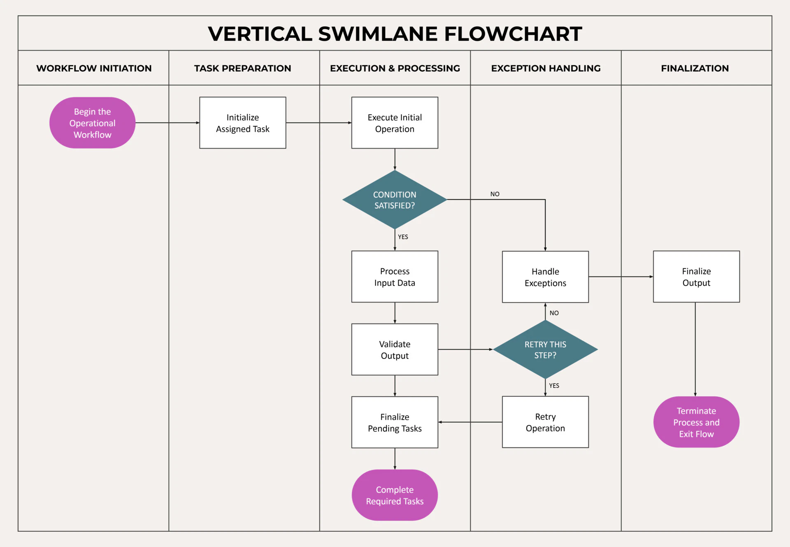

🔄 Brainstorm to Gantt: The Automated Workflow
The Project Controls Whiteboard unites collaborative, rapid whiteboard brainstorming with rigorous, mathematical project controls. Work packages created during ideation automatically feed a real-time computational schedule engine — executing Critical Path Method (CPM) algorithms, ISO/PMI 5×5 risk ranking, cross-functional role swimlanes, and Earned Value Management (EVM) S-Curves without manual transcription.
 Figure 1: The 4-step "Whiteboard Prototyper" automated workflow — transforming collaborative board brainstorming into structured role swimlanes, CPM schedules, and Excel/Power BI datasets.
Figure 1: The 4-step "Whiteboard Prototyper" automated workflow — transforming collaborative board brainstorming into structured role swimlanes, CPM schedules, and Excel/Power BI datasets.
Step 1 Rapidly Brainstorm Ideas
Use the top quick-entry bar (Write task & Enter), press N, or click the Sticky Note tool in the left sidebar to drop digital post-its onto the board. Capture scope elements, deliverables, and milestones effortlessly.
Step 2 Link Tasks with Shift-Drag
Hold Shift and drag from a predecessor note to a successor note to draw dependency arrows. The engine constructs a directional acyclic network graph calculating Finish-to-Start (FS) logic and predecessor constraints ($ES = \max(EF_{\text{predecessors}})$).
Step 3 Auto-Organize into Swimlanes
Right-click notes to assign disciplines (e.g. Venue & Logistics, Catering, Attire, Photo & Entertainment or Engineering, Procurement, Fabrication), durations, hours, budgets (BAC), and risk scores. In the 🏊 Swimlanes tab, click Apply & Arrange Canvas Board to auto-align all notes into clean sequential lanes.
Step 4 Instant Gantt, Risk & EVM
Automatically calculate early/late dates, total float, and critical path days in the 📊 Gantt view. Track risks in the ⚠️ Risk Matrix and view real-time CPI/SPI with direct-labeled S-Curves in 📈 EVM. Export to CSV for Excel and Power BI with one click.
📝 Rapid Brainstorming & Sticky Note Data Model
Every sticky note on the canvas is a fully parametric Work Breakdown Structure (WBS) work package containing duration, effort hours, cost baselines, and risk metrics.
Pro-Tips for Interacting with Notes:
- Quick Entry: Type task titles into the top bar's "Write task & Enter" field and press Enter to rapidly drop notes in succession.
- Inline Title Editing: Double-click any note on the canvas to immediately edit its title.
- Full Work Package Modal: Right-click any note to open its detailed property editor (Role, Duration, Hours, BAC, Risk Probability & Impact, Actuals, Progress %).
- Resize: Drag the bottom-right corner of any note to expand or compact its display area.
Sticky Note Parameters & Controlling Fields
| Field Name |
Description |
Usage & Impact on Calculations |
| Swimlane / Role |
Discipline, department, or lane |
Groups tasks into swimlanes (e.g. Venue & Logistics, Catering, Attire, Photo & Music or Engineering, Procurement, Fabrication, Quality) |
| Duration (Days) |
Planned calendar work days |
Used by the CPM engine to compute early/late finish dates, total float, and critical path length |
| Planned Hours |
Estimated labor work hours |
Tracks man-hours for resource leveling and labor productivity analysis |
| Planned Cost (BAC) |
Budget at Completion in kr/currency |
Forms the financial cost baseline for Planned Value (PV) and Earned Value (EV) curves |
| Resource / Responsible |
Assigned person, team, or vendor |
Appears in the Risk Register and WBS schedule assignments for accountability |
| Risk & Impact (1–5) |
Probability (1–5) × Impact (1–5) |
Calculates Weighted Risk Score (1–25) and positions note in the 5×5 Risk Matrix |
| Actual Hours & Cost |
Incurred hours and actual cost (AC) |
Feeds Cost Variance ($CV = EV - AC$) and Cost Performance Index ($CPI = EV / AC$) |
| Progress % |
Percent complete (0%–100%) |
Calculates Earned Value ($EV = BAC \times \text{Progress } \%$) and drives the S-Curve |
Color Coding Conventions (Edward Tufte Muted Palette)
Use color purposefully to signal status, scope category, or risk severity:
- Slate — General task, default text, or administrative milestone.
- Blue — Planned baseline scope, engineering, and logistics packages.
- Green — Completed milestones, favorable performance, or actuals.
- Red — Critical path tasks, high risk ($Score \ge 15$), or unfavorable cost/schedule variances.
- Yellow — Medium risk ($Score \ge 8$), warnings, or items under review.
🔗 Task Dependencies & Network CPM Modeling
Network logic determines the chronological sequencing of your project. By linking tasks directly on the canvas, you build an active mathematical dependency graph:
- Hold down the Shift key.
- Click and hold on the predecessor (starting) sticky note.
- Drag the cursor to the successor (target) sticky note and release the mouse.
- A blue directional arrow with an arrowhead is automatically rendered between note boundaries.
Multi-Predecessor Logic: When a task has multiple predecessors, its start date is automatically constrained by the predecessor with the latest finish date ($ES = \max(EF_{\text{predecessors}})$), strictly adhering to standard Critical Path Method (CPM) algorithms. Arrows dynamically re-route when you move notes on the board.
🏊 Swimlanes & Vertical Flowchart Diagram
The 🏊 Swimlanes tab automatically generates an executive-ready Vertical Swimlane Flowchart matching professional Google Slides and PowerPoint project presentation standards.

Figure 2: Vertical Swimlane Flowchart layout — cross-functional columns, initiation capsule (magenta), process boxes (white with WBS codes and planned cost), decision diamonds (teal), and terminal completion node.
- Cross-Functional Columns: Tasks are grouped vertically by role/discipline (e.g. Venue & Logistics, Ceremony & Reception, Catering & Cake, Attire & Rings, Photo & Entertainment or engineering packages).
- Decision Diamonds: High-risk tasks or questions (containing '?', 'review', 'permit', 'approval', etc.) are automatically formatted as decision gates with YES/NO branch labels.
- Apply & Arrange Canvas Board: Click this button to translate the clean vertical swimlane alignment directly onto the whiteboard canvas, neatly organizing scattered notes into structured functional rows.
- Fit Height & Zoom: Use Fit Height or the + / − zoom controls to scale the entire end-to-end process onto your screen.
- Export Flowchart: Download high-resolution PNG images directly for management decks and project charter reviews.
📊 Gantt Schedule, CPM & WBS Table
The 📊 Gantt view presents a dual-pane schedule layout compliant with professional project management standards:
WBS Schedule Table (Left Pane)
A comprehensive 12-column table displaying Task ID, WBS Name, Role, Duration, Planned Hours, Cost, Predecessors, Actual Hours, Actual Cost, Progress %, Start Date, and End Date. You can edit actuals and progress inline to instantly update EVM calculations!
Interactive Gantt Timeline (Right Pane)
A visual timeline displaying color-coded schedule bars, Critical Path highlighting, a red vertical Status Date marker, and a dedicated horizontal window roller slider to navigate wide project timelines smoothly.
Schedule Controls:
- Start Date: Sets the baseline kickoff date for the project schedule.
- Status Date: Sets the cutoff date for actuals, progress evaluation, and EVM variance calculations.
- Critical Path Calculation: Displays the calculated total project duration and highlights the longest path driving the completion date.
⚠️ 5×5 Risk Matrix & Risk Register
Risks assigned to sticky notes are automatically compiled into an ISO/PMI-standard 5×5 Risk Assessment Matrix:
$$\text{Weighted Risk Score} = \text{Probability (1–5)} \times \text{Impact (1–5)} \quad [\text{Range: } 1 \text{ to } 25]$$
- Low Risk (Score 1–7) — Muted slate/green background. Monitor through routine project governance.
- Medium Risk (Score 8–14) — Muted amber background. Requires mitigation strategy and active tracking.
- High Risk (Score 15–25) — Muted red background. Critical project risk requiring immediate escalation and contingency budget.
Below the matrix, the Risk Register table automatically ranks all work packages in descending order of risk exposure. Clicking any cell in the 5×5 matrix filters the table to highlight matching risks.
📈 Earned Value Management (EVM) & Tufte S-Curve
The 📈 EVM tab implements standard Earned Value Analysis for project controllers, tracking project performance against baseline commitments.
EVM KPI Formulas Reference
| Metric |
Formula |
Interpretation |
| Planned Value (PV) |
$\text{BCWS (Time-phased BAC to Status Date)}$ |
Approved budget assigned to scheduled work up to the Status Date |
| Earned Value (EV) |
$EV = \text{BAC} \times \text{Progress } \%$ |
Budgeted cost of work actually performed ($\text{BCWP}$) |
| Actual Cost (AC) |
$\text{ACWP (Total incurred actual expenditure)}$ |
Total realized cost incurred for work completed |
| Cost Variance (CV) |
$CV = EV - AC$ |
Positive ($>0$) = under budget; Negative ($<0$) = cost overrun |
| Schedule Variance (SV) |
$SV = EV - PV$ |
Positive ($>0$) = ahead of schedule; Negative ($<0$) = delayed |
| Cost Index (CPI) |
$CPI = EV / AC$ |
$CPI > 1.0$: cost efficient; $CPI < 1.0$: overspending |
| Schedule Index (SPI) |
$SPI = EV / PV$ |
$SPI > 1.0$: progressing faster than plan; $SPI < 1.0$: behind |
| Forecast (EAC) |
$EAC = \text{BAC} / CPI$ |
Estimate at Completion — forecasted total project cost |
| Estimate to Complete (ETC) |
$ETC = EAC - AC$ |
Expected remaining cost required to finish the project |
| Variance at Completion (VAC) |
$VAC = \text{BAC} - EAC$ |
Expected final variance (positive = budget surplus) |
Edward Tufte Data-Ink S-Curve Principles
The S-Curve canvas is rendered strictly following Edward Tufte's Data-Ink maximization principles:
- Direct Labeling: Labels (Planned / Baseline, Earned Value, Actual Cost) are written directly adjacent to the curves, removing the cognitive burden of disconnected legend boxes.
- Status Date Variance Callouts: A dedicated dashed vertical inspection line at the Status Date displays visual delta brackets for Cost Variance ($CV$) and Schedule Variance ($SV$) with explicit $+/-$ amounts and percentage variances.
- Zero Chartjunk: Vertical gridlines and heavy drop shadows have been removed to highlight the project trajectory cleanly.
🎨 Canvas Drawing Tools & Vector Shapes
The whiteboard canvas supports full freehand sketching and vector annotations for project diagrams, architecture sketches, and meeting notes:
- Select & Move (S): Click and drag vector shapes or select elements on the canvas.
- Pen (P): Crisp freehand pen drawing with responsive stroke width (2px–20px).
- Highlighter (H): Semi-transparent marker for highlighting schedule paths, areas, or notes.
- Eraser (E): Erase individual strokes or shapes under the cursor.
- Shapes: Line (L), Rectangle (R), Circle (C), Arrow (A), Diamond (D), Triangle (T).
- In-Shape Text: Double-click any geometric shape on the canvas to type inline labels and milestones!
- Clear Canvas: Click Clear Canvas at the very top of the left sidebar to wipe all strokes and notes from the board with confirmation.
⌨️ Keyboard Shortcuts & Hotkeys Cheat Sheet
| Key Combination |
Tool / Action |
Description |
| S |
Select Tool |
Select and move vector elements and notes |
| P |
Pen Tool |
Freehand drawing |
| H |
Highlighter Tool |
Translucent highlighting |
| E |
Eraser Tool |
Erase strokes under cursor |
| L |
Line Tool |
Draw straight lines |
| R |
Rectangle Tool |
Draw rectangles / boxes |
| C |
Circle Tool |
Draw circles / ellipses |
| A |
Arrow Tool |
Draw directional arrows |
| D |
Diamond Tool |
Draw decision diamonds / milestones |
| T |
Triangle Tool |
Draw triangles / delta markers |
| N |
Add Sticky Note |
Place a new parametric sticky note on canvas |
| Shift + Drag |
Connect Sticky Notes |
Create predecessor/successor dependency arrow |
| Ctrl + Z |
Undo |
Undo previous canvas or note action |
| Ctrl + Y / Ctrl + Shift + Z |
Redo |
Redo previously undone action |
| Delete / Backspace |
Delete Selection |
Delete selected stroke, shape, or note |
| ? or F1 |
User Guide |
Open this User Guide & Workflow dialog |
| Esc |
Close Modal |
Dismiss any active dialog or popup |
💾 Saved Projects, Local Storage & Business Intelligence Export
The Project Controls Whiteboard operates 100% local-first. All project data remains strictly in your browser with zero external server dependencies:
-
Saved Projects & Templates (
📁 Saved Projects): Click the Saved Projects button in the top bar to open the project management modal. Here you can:
- Open Local Saves: Switch between project snapshots saved directly in your browser's local storage.
- One-Click Template Library: Instantly load pre-built demo projects:
- 💍 Wedding Planning Project (Default active project): Comprehensive event management with Ceremony, Venue & Logistics, Catering & Cake, Attire & Rings, Photo & Entertainment, and budget baselines.
- 🏡 New Garden Shed Project: Residential construction, DIY foundation, procurement, structural assembly, and painting.
- ⚓ Patrol Vessel Overhaul: Maritime & naval defense refit (drydock hull survey, propulsion overhaul, combat sensor integration, sea trials, and EAC forecasting).
- Import JSON Project: Upload any exported
.json project file from your computer.
- Save Board (
💾 Save Board): Saves your current board snapshot to local browser storage and downloads a standalone, persistent .json backup file containing all strokes, shapes, WBS work packages, dependencies, and actuals.
- Wedding Plan Reset (
💍 Wedding Plan): Click the quick-access button in the top bar to instantly reload the default Wedding Planning baseline anytime.
- Export CSV (Excel & Power BI): In the Gantt view, click Export CSV (Excel) to generate a clean, semicolon-delimited CSV dataset formatted with UTF-8 BOM encoding. Designed for frictionless import into Microsoft Excel Power Query, Power BI DAX models, or DuckDB analytical queries.
- Export PNG (
📷 Export PNG): Export a crisp, print-ready image of your whiteboard sketches, notes, and diagrams for executive presentations and project charter decks.
📱 Smartphone Mobile Version (mobile.html)
For rapid task entry in the field, shipyard drydock, job site, or on-the-go meetings, a dedicated, lightweight mobile application version is available at mobile.html.
Quick Entry Rapid Task Input Form
Thumb-friendly input with quick discipline pills (Engineering, Procurement, Production, Management, Quality, Logistics), calendar duration in days, estimated work hours, and budget baseline cost (BAC in kr). Hitting Enter or tapping ➕ Add Task to Board drops the note instantly into your project with immediate feedback.
Auto-Grid Whiteboard Swimlanes
Tasks entered on mobile are automatically calculated with desktop canvas coordinates (X positioned by discipline column, Y spaced sequentially by task order). When you open the project on your desktop computer, all sticky notes appear neatly organized in their respective swimlanes.
1-Tap Save Direct File Saving & Parity
Tap 💾 Save in the header or in the Files tab to instantly download your complete <ProjectName>.json file directly to your smartphone. The schema is 100% compatible with the desktop whiteboard, Gantt CPM engine, risk matrix, and EVM calculations.
Offline Local-First & PWA
Operates with zero cloud latency and no server requirements. Autosaves to mobile localStorage continuously. Switch seamlessly between mobile (mobile.html) and full desktop (index.html) using the header toggle buttons.